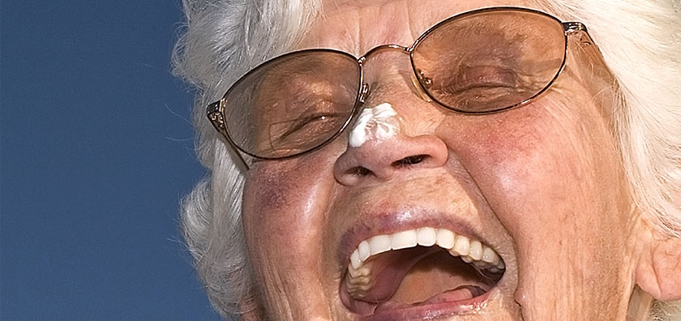

Клиент - стоматологическая клиника в Великом Новгороде.
Разработка дизайн-концепции серии постеров для наружной рекламы.
Идея: оставаться в информационном поле горожан, напрямую не говоря о продукте.
Современная наука доказала: в улыбке скрыт ключ к счастью. Мы напомнили целевой аудитории клиник, что улыбка имеет большое значение в жизни и ей нужно уделять должное внимание.
Эмоции, которыми нужно делиться
